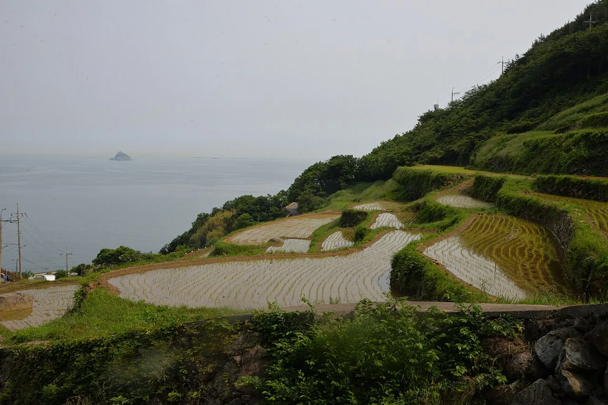
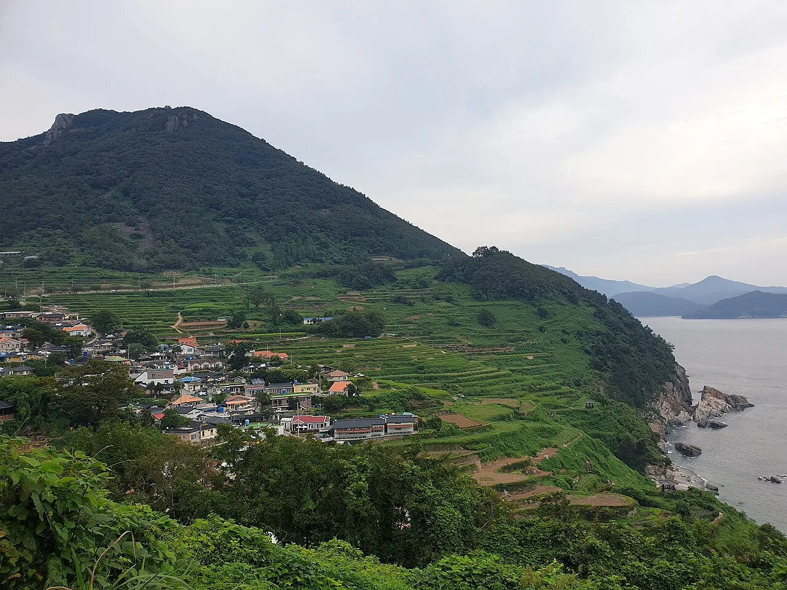
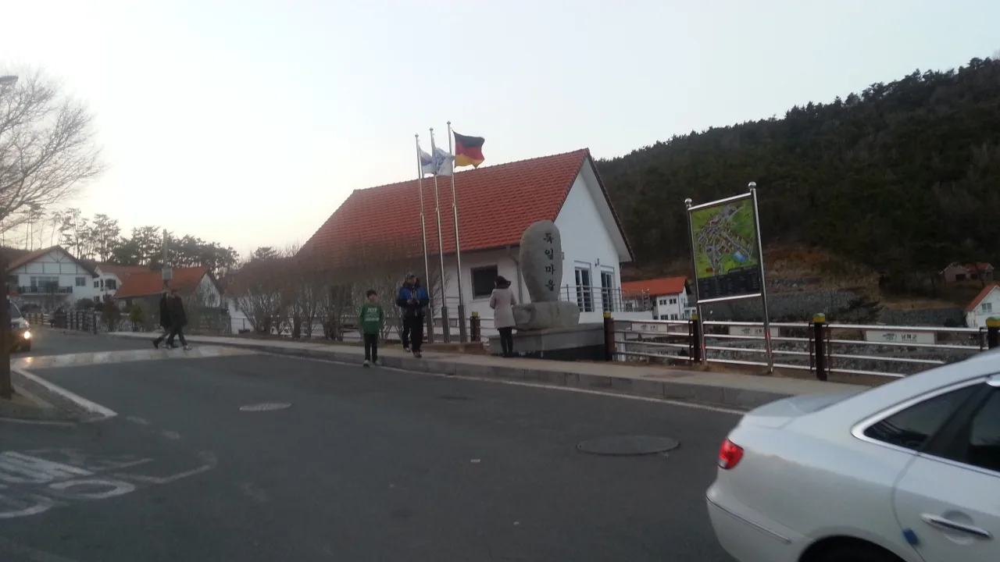
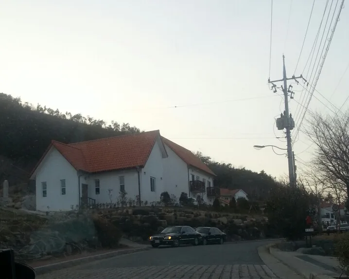
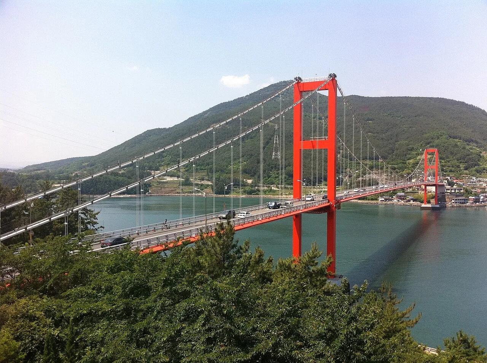

▲ 가천다랭이마을 진입로. 좁은 길 갓길이 사실상 주차 공간처럼 쓰이는 것이 이 마을의 현실이다 ⓒ Wikimedia Commons
1. 무료 주차장이 두 개나 있는데
가천다랭이마을 입구에는 제1주차장과 제2주차장이 있습니다. 둘 다 무료입니다.
그런데 이 마을에서 자차 여행자가 겪는 문제는 주차 요금이 아닙니다. 마을 안쪽으로 들어가는 도로가 있기는 한데, 폭이 좁아 주차할 자리가 사실상 없습니다.
지도만 보면 길이 이어져 있으니 들어갈 수 있어 보입니다. 실제로 들어가면 회차할 곳도, 세울 곳도 없는 구간에 놓입니다. 뒤에서 차가 따라 들어오면 상황이 더 나빠집니다.

▲ 논 위쪽으로 마을 도로가 지나간다. 바다까지 비탈이 이어지는 지형이라 도로변에 차를 뺄 여유 공간이 거의 없다 ⓒ Wikimedia Commons
2. 주차한 다음이 진짜 구간
다랭이마을은 이름 그대로 계단식 논이 바다까지 이어지는 지형입니다. 즉 마을 전체가 경사입니다.
주차장에 차를 두고 마을을 보려면 내려갔다 올라와야 합니다. 내려가는 길은 쉽지만 돌아오는 길이 문제입니다. 유모차나 휠체어로는 접근이 어렵고, 무릎이 좋지 않다면 무리가 됩니다.
여기서 판단이 필요합니다. 마을 전체를 다 볼 것인지, 위쪽 전망 지점에서 바라보고 갈 것인지를 미리 정해야 합니다. 시간과 체력 소모가 크게 달라집니다.

▲ 계단식 논이 바다까지 이어진다. 사진에서 보이는 높이 차이가 그대로 왕복 보행 부담이 된다 ⓒ Wikimedia Commons
3. 독일마을은 성격이 다르다
독일마을에도 주차장이 마련돼 있습니다. 차를 세우고 도보로 둘러보는 방식이 권장됩니다.
다만 이곳은 사람이 사는 마을입니다. 관광지로 조성된 구역과 실제 주거 구역이 섞여 있어, 골목에 차를 들이는 것이 민폐가 되기 쉽습니다.

▲ 독일마을 입구. 관광 구역과 주거 구역이 섞여 있어 골목 진입은 피하는 편이 낫다 ⓒ Wikimedia Commons
바로 옆 원예예술촌은 조건이 다릅니다. 주차는 무료지만 입장료가 있습니다. 성인 6,000원, 청소년 3,000원, 어린이 2,000원이고 개장 시간은 09:00~17:00입니다. 약 5만 평 부지에 원예 전문가들이 조성한 주택과 정원이 이어집니다.
여기서 시간 계산이 필요합니다. 오후 5시에 문을 닫으므로, 독일마을과 원예예술촌을 함께 보려면 늦어도 오후 3시 전에는 도착해야 합니다. 남해 안에서의 이동 시간을 감안하면 그날의 마지막 일정으로는 무리입니다.

▲ 붉은 기와 주택 아래 언덕길. 마을 안쪽 도로는 이렇게 갓길에 차를 대는 순간 통행 폭이 한 대분으로 줄어든다 ⓒ Wikimedia Commons
다랭이마을과 독일마을은 섬의 반대편에 있습니다. 다랭이마을은 남서쪽 가천, 독일마을은 북동쪽 삼동입니다. 하루에 둘 다 보려면 섬을 대각선으로 가로질러야 합니다.
4. 남해에서 거리는 시간과 다르다
남해는 지도상 거리가 짧아도 이동 시간이 길게 나옵니다. 해안선을 따라 도로가 굽이치고, 산을 넘는 구간이 섞여 있기 때문입니다.
내비게이션의 예상 시간을 그대로 믿기 어렵습니다. 곡선 구간에서는 실제 주행 속도가 예상보다 낮고, 관광철에는 앞차를 따라가는 상황이 이어집니다.
실전 기준은 이렇습니다. 남해 안에서 한 지점에서 다른 지점으로 옮기는 데 40분에서 1시간을 잡아 두면 일정이 무너지지 않습니다. 하루에 세 곳 이상은 무리입니다.

▲ 남해대교. 육지와 남해를 잇는 관문이자 성수기 정체가 시작되는 지점이다 ⓒ Wikimedia Commons
5. 들어가는 다리가 둘
남해로 들어가는 길은 남해대교와 노량대교입니다. 두 다리가 나란히 놓여 있습니다.
이 구간이 성수기 병목입니다. 섬으로 들어가는 차량이 한 지점에 모이기 때문입니다. 연휴 오전과 일요일 오후에는 다리 앞뒤로 정체가 생깁니다.
피하는 방법은 시각을 옮기는 것뿐입니다. 들어갈 때는 오전 9시 이전, 나올 때는 오후 3시 이전이나 저녁 7시 이후가 상대적으로 낫습니다.
6. 남해 자차 여행 정리
첫째, 마을 안으로 차를 들이지 마십시오. 다랭이마을도 독일마을도 마찬가지입니다. 입구 주차장에 세우고 걷는 것이 가장 빠릅니다.
둘째, 다랭이마을은 경사를 감안해 일정을 잡으십시오. 내려갔다 올라오는 왕복을 계산에 넣어야 합니다.
셋째, 하루 두 곳을 원칙으로 삼으십시오. 다랭이마을과 독일마을은 섬의 반대편입니다. 둘 사이에 다른 일정을 끼우면 이동만 하다 끝납니다.
넷째, 다리 통과 시각을 정해 두십시오. 섬 여행에서 가장 예측 가능한 정체 구간이 진입로입니다.
정리하면 이렇습니다. 남해에서 자차의 역할은 마을 입구까지입니다. 그 안쪽은 걷는 구간이고, 그 사실을 먼저 받아들이면 일정이 훨씬 단순해집니다.